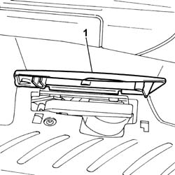
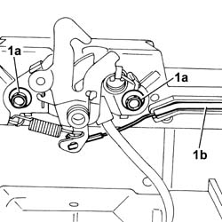
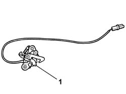

7025A34 BONNET LID LOCK (ONE) - R+R OR REPAIR
- Path
- Procedures > 70 FITTINGS > 7025 COMPARTMENT LIDS > 7025A LOCATION OF BONNET WIND NOISE > 7025A34 BONNET LID LOCK (ONE) - R+R OR REPAIR
- Kind
- repair procedure (removal / refitting; the operation number is the code)
- Applies to
- all engines; all production periods
- Interactive page
- https://sloeber94.github.io/elrnDB-fUlss/en/#/179007751
Applies to: all engines; all production periods
 Removing
Removing
 Refitting
RefittingOp. 7040D60 RADIATOR GRILLE CONNECTING ELEMENT. - R.& R.
1. Disconnect the electrical connection for the bonnet alarm system switch.

Applies to: all engines; all production periods
1. Undo the bolts (1a) fixing the lock and release the bonnet release cable (1b).

Applies to: all engines; all production periods
1. Remove the bonnet lid catch.

Applies to: all engines; all production periods
Refitting
Removing- Fit the bonnet lid lock.
- Attach the bonnet release cable to the lock.
Op. 7025A10 BONNET LID - SQUARE
- Tighten the lock fixing bolts to torque.
- Connect the electrical connection for the bonnet alarm system switch.